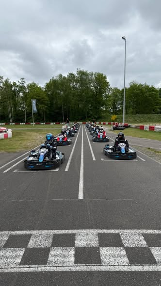
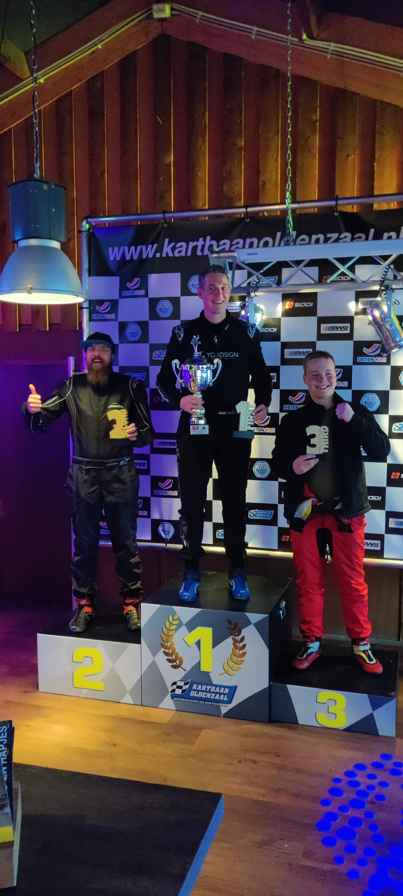
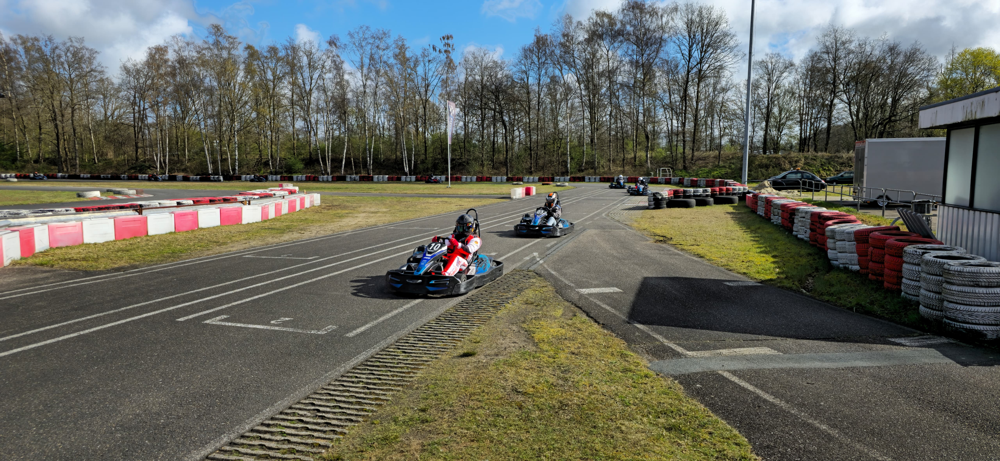
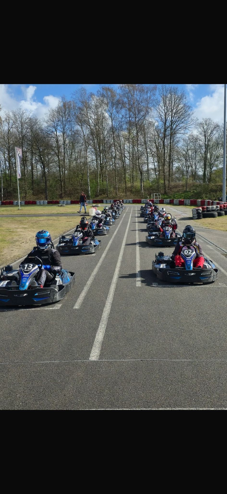
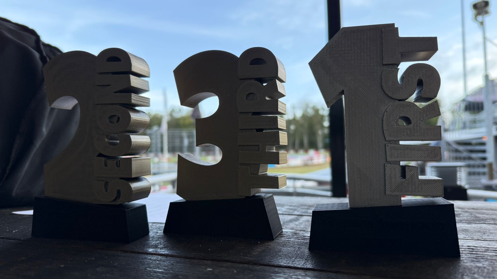

Kart Competitie
Volg alle sprintresultaten live, bekijk de seizoensstand en beheer de volledige competitie vanuit één centrale omgeving.
Iedereen kan de seizoensstand en racehistorie volgen.
Per driver zie je sprint 1, sprint 2 en het totaal aantal punten.
Admins kunnen races toevoegen, wijzigen, verwijderen en exporteren.